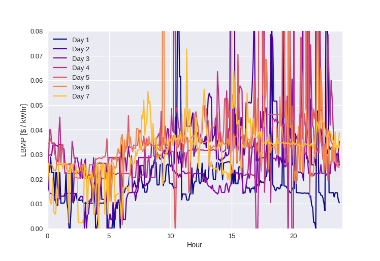
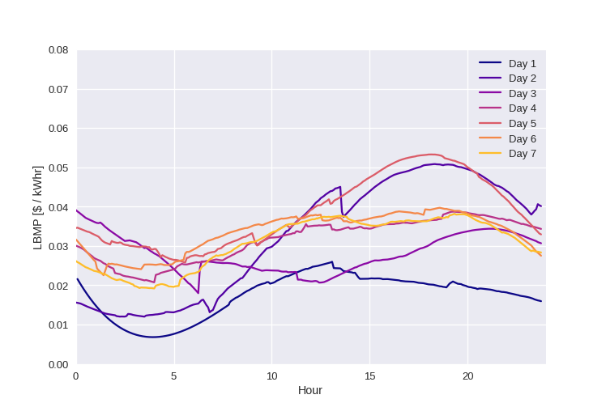
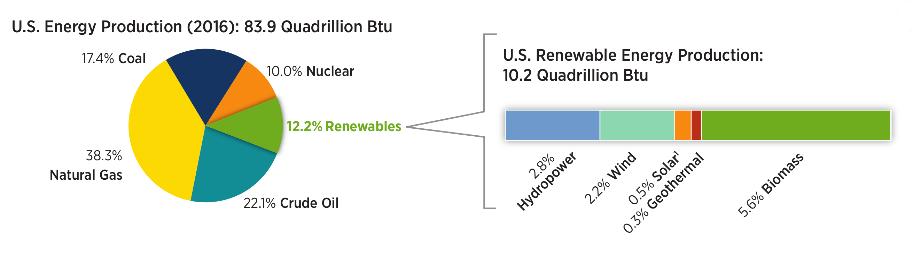
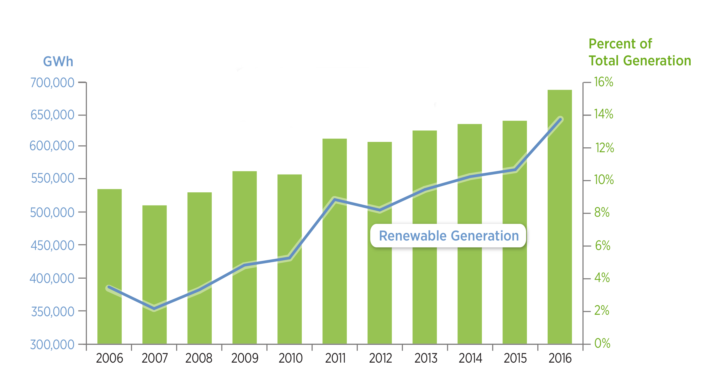

Can Parked Cars and Carbon Taxes Create a Profit?
The Economics of Vehicle-to-Grid Energy Storage
for Peak Reduction
Heta Gandhi, Gerad Freeman, Andrew White
ACS, New Orleans
March 19th, 2018
The Price of Electricity is Variable
caused by mismatch between power consumption and generation
A smooth version shows the structure of prices
Renewables Contribute to These Fluctuations
Renewables Are Rapidly Increasing
Grid Level Energy Storage Can Solve This
Grid level energy storage is expensive
Solution: Electric vehicle to grid Uses electric vehicle battery capacity as grid level energy storage
Electric Vehicle To Grid
Research Questions
- Does it impact at grid-scale?
- Is it economical for an EV driver?
- Is it economical for a utility?
- Are there negative effects of coupling commute times to grid generation?
Our Previous Work
- Economics of V2G in New York City
- Use of location based marginal pricing (LBMP)
- Accounts for battery cycling and degradation
- Two scenarios
- Work-hour Price-taker
- Optimal Selling Price

Methods
Battery degradation cost$^1$
$$c_{dgdn} = \frac{E_{s,max} c_b}{2\ DoD \ L_c E_{s,max}}$$
$c_{dgdn}$: Cost of battery degradation
$E_{s,max}$: Battery capacity(kWh)
$c_b$: Battery capital cost ($ /kWh)
$DoD$: Depth of discharge
$L_c$: Battery lifecycles
- Kempton, et al. J. Power Sources 2005 144:268-294
Revenue from V2G
$$r(t) = (E_s(t - 1) - E_s(t))\ \eta\ LBMP(t)$$
Savings from V2G
$$S= \sum_{working\ days} \bigg[ \Big(\sum r(t) - \sum (c_{ch}(t) + c_{dgdn}(t))\Big)_{V2G} \\ - \Big(\sum (0 - (c_{ch}(t) + c_{dgdn}(t))\Big)_{Commute} \bigg]$$
$c_{ch}$: Price of charging
$r(t)$: Revenue earned from V2G
$E_s(t)$: Battery's remaining capacity at time t
$LBMP(t)$: Location based maginal price at time t
$\eta$: Round trip efficiency of the vehicle
Results
The Problem Statement
- Assumptions of the model
- Commute distance is constant at 7.7 miles.
- It takes 1 hour to commute between home and work.
- Work day is always nine-to-five.
- Problems
- The model is deterministic.
- It doesn't use Real data and Statistics
- EV Drivers may have variable behavior and work cultures.
Let's try to modify the model to be more Realistic...
Statistical Stochastic Models of Vehicle-to-Grid
What did we change?
- NHTS$^1$ and ACS$^2$ data were used to sample
- Commute Distance to work
- Commute Time to work
- Hours worked per week
- Working hours for the day
- National Household Travel Survey. Federal Highway Administration, U.S. DoT 2017 URL: http://nhts.ornl.gov.
- ACS Public Use Microdata Sample. U.S. Census Bureau 2017